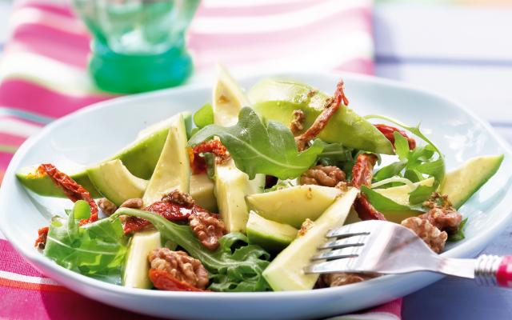

Avocadosalade
Deze gezonde salade laat je maaltijd lekker fris beginnen.
Ingredienten
- 1 avocado (gesneden)
- 50 gram walnoten
- 300 gram rucola
- 100 gram gedroogde tomaten(gesneden)
- limoensap
- olijfolie
- peper
- 50 gram paneermeel
Bereidingswijze
- Snij de avocado’s in partjes en besprenkel ze meteen met limoensap.
- Snij de gedroogde tomaatjes in reepjes.
- Snij de avocado’s in partjes en besprenkel ze meteen met limoensap.
- DStrooi er de walnoten bij. Sprenkel er nog wat olijfolie en nog een beetje limoensap over. Werk af met een draai peper uit de molen.

Tip! Ook erg ekker met zonnebloempitten.